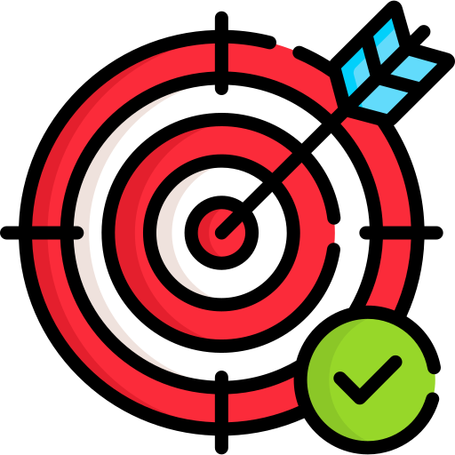

Menjadi program studi yang terkemuka di bidang Teknik Komputer di Asia Tenggara dan menjadi rujukan pendidikan tinggi di daerah Kepulauan Riau serta berkontribusi dalam pembangunan bangsa.

Misi
Menyelenggarakan dan mengembangkan pendidikan dan pengajaran di bidang Teknik Komputer untuk menghasilkan lulusan yang unggul dibidangnya dan menjunjung tinggi integritas.
Menyelenggarakan dan mengembangkan penelitian di bidang Teknik Komputer berbasis kearifan lokal.
Mengaplikasikan berbagai keahlian dan keilmuan melalui pengabdian kepada masyarakat untuk meningkatkan kesejahteraan masyarakat.
Menjadi agen pembaharu dalam mendorong kemandirian pembangunan SDM bidang Teknik Komputer.
Berperan sebagai simpul utama jejaring pendidikan tinggi Teknik Komputer di Indonesia dan internasional.
Tujuan
Menghasilkan lulusan di bidang Teknik Komputer yang memiliki kompetensi, integritas dan daya saing di tingkat nasional dan internasional.
Terwujudnya budaya meneliti di lingkungan civitas akademika Prodi Teknik Komputer yang mampu mengembangkan ilmu pengetahuan dan dapat memberikan solusi terhadap permasalahan bangsa..
Membantu Intitusi dalam mewujudkan good university governance yang accountable, efektif, efisien.
Menghasilkan lulusan yang memiliki kemampuan untuk memegang peranan penting di tingkat operasi atau manajerial dalam berbagai organisasi.
Memberikan kontribusi yang mendukung pembangunan nasional yang berkelanjutan melalui kegiatan pengabdian yang berfokus pada peningkatan kualitas kehidupan masyarakat dan peningkatan kinerja dan daya saing industri.
Membangun jejaring dengan berbagai lembaga dan industri, baik di tingkat nasional maupun internasional, untuk mendukung kegiatan pendidikan, penelitian, dan pengabdian masyarakat serta menjembatani para lulusan memasuki dunia kerja.yang memiliki kompetensi, integritas dan daya saing di tingkat nasional dan internasional.